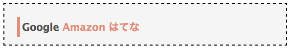
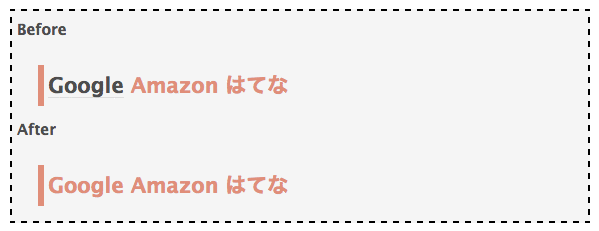

2013-12-10
はてなブログ（ ダイアリー）で無料でキーワードリンクを消す方法
キーワードリンクの弊害
最近になって見出しのデザインを変えたのですが、下記のようにキーワードリンクされてしまい、デザインが崩れてしまいました。

これではちょっとみっともないので、キーワードリンクを消したいと思います。
このブログのアカウントはPro（有料）ではないのですが、消すことができるのでしょうか。
方法
無料アカウントでもキーワードリンクを消すことができますが、ちょっと一手間かかります。
一番簡単な方法は、文章を［］と［］で囲う方法です。
この方法は、はてなブログ、はてなダイアリーの両方で有効で、おそらくどの記法（markdownなど）でも大丈夫です。
本ブログはmarkdown記法を使っているので、次のようになります。
##[]Google Amazon はてな[]すると次のようになります。

キーワードリンクされなくなりましたね。
その他の方法一覧
- 日記の編集画面から『キーワードリンクを編集』
- 入力時に文章を［］と［］で囲う
- カテゴリーの設定を変える
- スコアの設定を変える
- キーワードの見た目を目立たなくさせる
- キーワードを削除する
- 適切なキーワードを登録する
- ちょっとした更新だけで更新
- 有料オプションでキーワード自動リンク機能をオフ
- 日記内のひとつのキーワードのリンク回数を１回にする
（詳しくは はてなダイアリーガイド「日記のキーワードリンクを消す、編集する」 を参照してください。）
まとめ
キーワードリンクを消す方法といえば、有料オプションを使うしかないと思われがちですが、一手間かければ無料でもできることが分かってもらえたと思います。

「はてな」ではじめるブログ生活―はてな公式ハンドブック
posted with amazlet at 14.01.18
鈴木 芳樹
ディーアート
売り上げランキング: 209,101
ディーアート
売り上げランキング: 209,101
| 2014年のWeb動向予測 | |
 | CSSだけで美しいレスポンシブデザインを実現『Pure』 |
 | 静的サイトジェネレータ『Octopress』の使い方 |
 | 完全に無料なGithubブログを始める方法 |
 | 無料ブログサービスの大きな落とし穴 |
comments powered by
Disqus